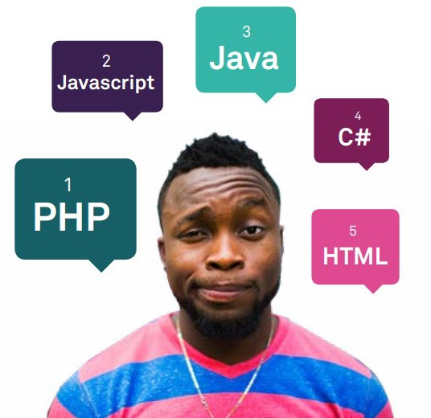
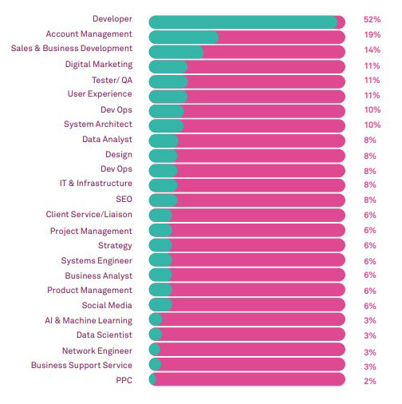

With my three years of university coming to an end and graduation fast approaching, is Manchester’s digital industry the best place for me? Hopefully this blog will help you understand my situation and place in the industry.
As an upcoming website development graduate, who is wanting to enter the digital industries, it is unnerving to know that findings from the (Manchester Digital Skills Audit 2019) suggests that ‘business growth turnover has declined for the past two years’ with only 54% of businesses reporting growth. There are speculations that this is down to Brexit, the effects that Brexit is going to have on the industry is uncertain so far but 37% of businesses have reported a negative impact’. Could this be a possible threat to my future career as a web developer?
The constant evolution of technology means that it is hard to keep up with certain aspects such as new programming languages, whilst at university you follow a curriculum where you focus on a handful of languages, so it doesn’t become too overwhelming. This can mean that when graduates enter a working environment, they are often not ready and lack certain skills. Many businesses have admitted to recruiting graduates but 45% have no in-house team to support them which means that sometimes graduates are overwhelmed when they are introduced into a workplace environment.
What I’ve learnt so far…
(Image sourced from Manchester Digital Skills Audit 2019)
Throughout my past two years at university I have learnt multiple new skills and languages that are going to benefit me once I try to make my way into the industry. I have been introduced to several languages such as: HTML, CSS, PHP and JavaScript, according to the Manchester Digital Skills Audit (2019) HTML is the fifth top programming language that is in demand, as this is one of the main languages I have been consistently learning throughout the 2 years, it has increased my confidence in being able to find a suitable job after university. The audit also states that JavaScript is the second most sought after language when it comes to recruiting and in second year, I created a handful of applications which was an exciting experience to see code i created actually functioning. Finally, the top in demand programming language is PHP and I have also have a general understanding of how it works from my first year at university, where I created a website called ISongs which was fun and great to see functioning.
High hopes
An aspect that gives me high hopes for my future is that the developer role is the most in demand position with 48% of businesses looking for recruits, showing that there is no lack of opportunity in the industry. The only downside to this is that 30% of businesses have said that it is the most difficult role to fill meaning I would have to fit a certain criteria. With my graduation in the near future, the pressure will be on to find myself a job after uni.
Although there is a slight uncertainty due to Brexit, the digital industry is still in a really good position and is one of the biggest industries in our world. With the digital industry in the UK making a 5 billion-pound scaleup investment, it ranks fourth in the world after the US, China and India. (Tech Nation 2019) This is good news for me as it shows I can be in one of the best countries for this type of work. To be precise, Manchester’s digital community is expected to create 23,000 jobs over the next decade (MPA Manchester 2019), this staggering amount gives me high hopes for my career’s future after graduation.
(Image sourced from Manchester Digital Skills Audit 2019)
The one personal benefit from Brexit that is becoming a possibility is that if the EU staff rights are in fact being changed and it becomes harder for them to work in the UK, companies will be forced to seek local employees like myself to fill the gaps left by those forced to leave. Although there is only a small percentage of the workforce who come from the EU so I most likely will not see any impact from this. According to the Manchester Digital Skills Audit (2019) developer roles have had the biggest salary increase in the last 12 months and has been for past 6 years. This is very good news for me as a developer role has the biggest increase in pay rises with a staggering 52%.
References:
- Manchester Digital Skills Audit Report. 2019. Manchester Digital Skills Audit Report. [ONLINE] Available at: https://www.manchesterdigital.com/talent-and-skills/digital-skills-audit [Accessed 5 October 2019].
- MPA Manchester. 2019. MPA Manchester Article 2019. [ONLINE] Available at: http://www.mpa.org.uk/insight/blog/why-manchester-is-a-hub-for-the-digital-industry. [Accessed on 10 October 2019].
- Tech Nation. 2019. Teach Nation Report 2019. [ONLINE] Available at: https://technation.io/report2019/#introduction. [Accessed 10 October 2019].